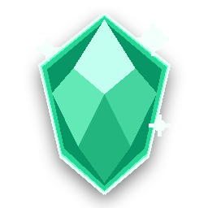

TRẠNG THÁI TRANG
Chưa phát hiện dấu hiệu bất thường
Kiểm tra cục bộ của prototype đã hoàn tất.
https://google.com

0 Linh ThạchMVP mô phỏng pipeline tạo video ngắn ngay trong shell của trình duyệt.
Sẵn sàng tạo job mock mới. Mỗi bước sẽ mô phỏng khoảng 1 giây.
MP3/MP4 phát nền Android; YouTube tự chuyển sang cửa sổ PiP khi bấm Home.
Cắt · xoay · lật · đổi kích thước · chia ảnh · xuất ZIP
Giữ nguyên chức năng từ Editoranhlqlq: đổi kích thước, lật ngang, lật dọc, xoay và lưu tất cả thành một tệp ZIP.
Cắt tự do bằng tám điểm kéo, đổi kích thước, lật, xoay, chia thành nhiều phần và xuất ảnh theo định dạng mong muốn.
Khi chuyển sang APK, ứng dụng có thể mở thẳng Cloudflare WARP và phát hiện Android đang có VPN hoạt động hay không. Việc bật WARP vẫn cần xác nhận trong ứng dụng VPN.
Đang kiểm tra trạng thái trang hiện tại
Kiểm tra cục bộ của prototype đã hoàn tất.
HTML không thể xác minh VPN. Website vẫn có thể nhìn thấy IP đang kết nối.
Bản HTML chỉ mô phỏng giao diện và áp dụng một số quy tắc JavaScript cục bộ. Safe Browsing, kiểm tra chứng chỉ, quyền Android và chặn request thật sẽ được thực hiện trong APK WebView.
Với nhu cầu tải nội dung để dùng ngoại tuyến, camera, micro và vị trí được chặn mặc định ở mức Mạnh và Tối đa.
Shield cũng phát hiện tên giả như truyen.txt.apk hoặc video.mp4.exe.
Trang HTML ngoại tuyến được thêm chính sách chặn mạng và mở trong iframe sandbox.
Nội dung đã lưu có thể mở bằng công cụ Đọc truyện TXT, làm sạch phần thừa và nghe bằng giọng Google hoặc giọng hệ thống mà không cần tải lại website.